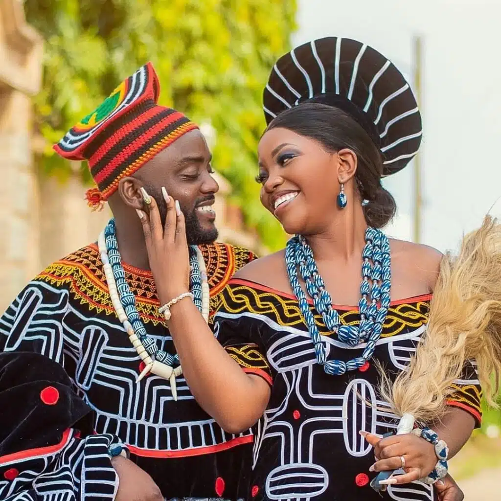
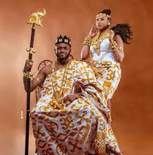

Cameroun
Commençons par la région du Nord-ouest qui nous présente Le Toghu qui est une tenue
iconique du peuple du nord-ouest, plus précisément par le peuple Bamenda. En effet,
jadis portée par les membres de la cour royale, le Toghu encore appelé Atoghu est
considéré comme un vêtement sacré.
Cote d'ivoire
Le kita est un tissu traditionnel que les Akans de la Côte d’Ivoire ont en partage avec d’autres
peuples de la sous-région tels que les Ashantis (Ghana) et les éwés. Ce pagne tissé Confectionné
à partir de 4 bandes assemblées, formant une étoffe aux dessins géométriques et aux couleurs
éclatantes et lumineuses, le kita est particulier à cause de la façon dont ses motifs sont
tissés.Le port du Kita répond à des codes : motifs bien ordonnés, bord du tissu bien agencé.
Autrefois porté comme une toge pour les hommes et les femmes, ou tissu drapé autour du cou
ou des bras par ces dernières, le Kita sert aujourd’hui à la confection de vêtements modernes5.
Congo

La tenue traditionnelle en tissu Kuba, également connue sous le nom de raphia, est
originaire du peuple Kuba, qui est une ethnie bantoue d'Afrique centrale. Les Kuba
vivent principalement dans la région du Kasai, en République démocratique du Cong
(RDC). Le tissu Kuba est fabriqué à partir de feuilles de palmier raphia et est
utilisé pour créer des vêtements, des étoffes et des objets d'art décoratifs. En savoir plus